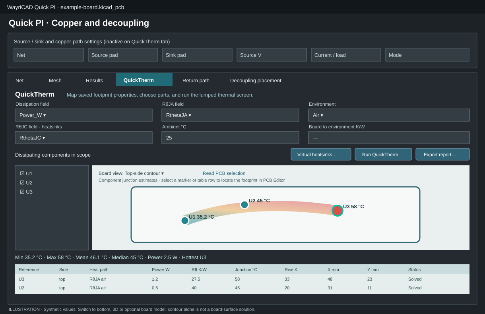
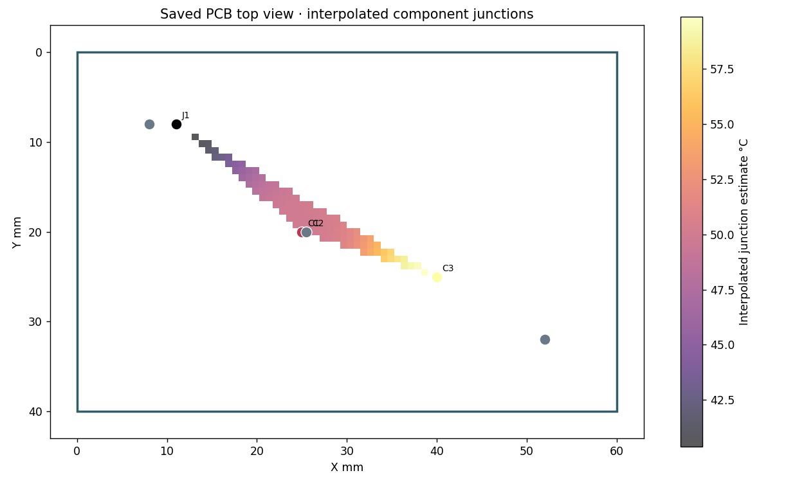
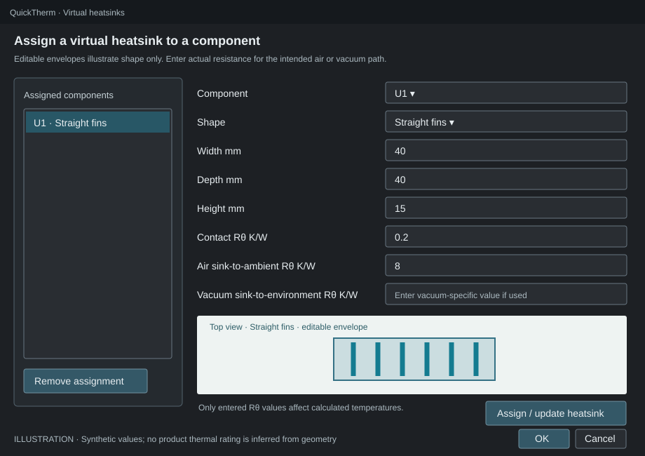

QuickTherm is the QuickTherm tab inside WayriCAD Quick PI. It reads saved PCB footprint properties and estimates steady-state junction temperatures without changing the board. The optional models add thin-sheet or layer-resolved board screening; neither is CFD or a validated transient simulation.


.kicad_pcb. QuickTherm reads the saved file, not unsaved edits.| Quantity | Example saved field | Accepted value |
|---|---|---|
| Dissipated power | Power_W | 0.5, 500mW, 0.5 W |
| Air junction-to-ambient | RthetaJA | 40 K/W |
| Junction-to-board | RthetaJB | 5 °C/W |
| Junction-to-case for a heatsink | RthetaJC | 2 K/W |
Bare power numbers mean watts; bare thermal-resistance numbers mean kelvins per watt. Power may be zero, but must be present for each selected part. Thermal resistances must be positive.
Power_W).If a field name is missing, add it to a footprint, save the PCB, then use Reload saved board in Quick PI.
Check the dissipating references in the left-hand list. Select all and Clear help manage the list. Unselected heat sources are excluded. For vacuum, every selected part needs complete power and thermal-path data so a missing source cannot silently lower the shared board temperature.
Click Virtual heatsinks…, choose a reference, then select straight fins, pin fins, radial fins, flat plate, or Resistance only · no envelope. The dimensional presets are editable visual starting points, not vendor SKUs or thermal ratings. Resistance-only requires no dimensions.

Enter positive contact Rθ and an environment-specific sink-to-environment Rθ: air RθSA for air analysis and/or vacuum RθSA for vacuum analysis. Map the component's RθJC field in the main tab. Click Assign / update heatsink, then OK. Selecting an existing assignment lets you edit it; Remove assignment returns that part to its ordinary RθJA/RθJB path. Geometry affects the live sketch only; it does not create a thermal rating. An air rating cannot be reused as a vacuum rating.
Click Run QuickTherm. The default Top-side map marks top-mounted components on the saved Edge.Cuts outline. Bottom-side map mirrors the X axis and shows bottom-mounted parts. Marker colors are estimated component junction temperatures, not the board surface. Choose the separate top/bottom junction contours for bounded same-side interpolation, or the ranked chart. Blank contour regions lack support. 3D overview extrudes the saved board outline by its saved thickness and shows illustrative component markers; azimuth and elevation rotate it. It is not a STEP assembly or exact component-height model.
For an optional board heat field, expand Optional board conduction / radiation / virtual airflow model, enable it, review effective in-plane conductivity, emissivity, board and sink air speeds, and provide exposed area for each virtual sink. Map a saved Model junction-to-board RθJB field for board-cooled model junction temperatures; sink-cooled parts use their already mapped RθJC and entered contact resistance. Missing RθJB leaves a board-site temperature without a model junction temperature. Saved board thickness is read automatically. Airflow must be zero in vacuum. Top board model and Bottom board model show the same thin-sheet midplane temperatures; there is no through-thickness gradient. Choose 48 long-axis cells by default or increase to 80 for refinement; footprint heat is distributed by overlap area. Compare local temperatures at two meshes. The report records convection, radiation and heat-balance residual. Airflow coefficients are screening correlations, not CFD. The analytics strip reports min, max, mean and median solved component junction estimates, total solved power and the hottest reference. The sortable output table includes selected parts that could not be solved, with their reasons, and shows heat path, power, resistance, junction temperature, rise, optional modeled board-site and sink temperatures, and PCB X/Y. Model junction remains blank without mapped RθJB or an explicit sink path; legacy RθJA is not reused. Click a row or map marker to cross-select its exact footprint in the originating PCB Editor. Click Read PCB selection to bring an editor-selected footprint back into the table and map. Save and rerun after board edits; cross-selection rejects a stale saved board. Changing a mapped input clears old results.
Air, no heatsink: Tj = Tamb + P × RθJA. With a virtual heatsink: Tj = Tamb + P × (RθJC + Rcontact + RθSA). Vacuum board path: Tboard = Tamb + ΣPboard-path × Rboard→environment, followed by Tj = Tboard + P × RθJB. Heatsink power is excluded from the shared board-node sum; parallel case-to-board conduction is not solved.
This is steady-state finite-volume screening. It approximates package spreading, barrel heat flow, convection and gray-body radiation; it does not solve CFD, transients or electrical-temperature feedback. Whole-circuit electrothermal simulation belongs in SPIKE #1.
Export report… writes local HTML and paired JSON with top/bottom maps and contours, a 3D overview, optional board-model field and heat balance, component table, analytics, mapping, scope, heatsink definitions, coverage and assumptions. Keep both files together. After PCB edits, save and reload the board, review fields and scope, then rerun; old reports do not update automatically.
| Problem | Action |
|---|---|
| Field absent | Add the saved PCB footprint property, save and reload. |
| Part excluded | Inspect its field name, units and value in the report. |
| Vacuum run fails | Complete all selected power/path fields, board Rθ for unsinked parts and vacuum RθSA for heatsinks. |
| Shape changes but temperature does not | This is expected: dimensions are visual; entered Rθ controls the estimate. |
The lumped and thin-sheet modes omit spatial copper detail. The layered screen resolves saved copper and vertical paths approximately but still omits package spreading, detailed material anisotropy, airflow fields, temperature feedback and transients. Use a qualified thermal model or measurements for design sign-off. The Markdown guide includes a CLI walkthrough and fuller worked air/vacuum examples.